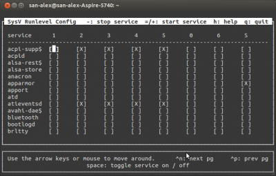
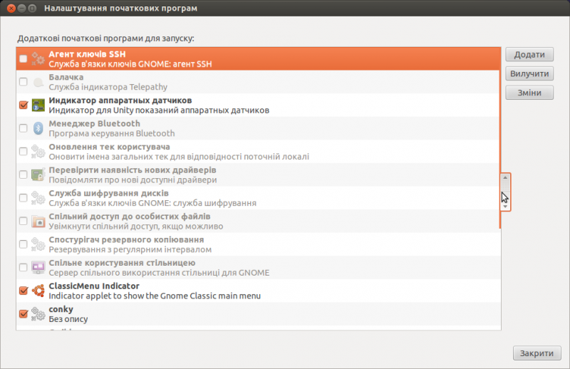

Увеличение скорости работы Ubuntu
_SAV
----------------------------------------------------------------------------------------------------
Увеличение скорости работы Ubuntu
Содержание
Часть информации устарела. При применении к новым выпускам Ubuntu будьте осторожны!
Краткое описание руководства
Эти инструкции будут полезны для оптимизации процесса загрузки, его ускорения, а также общей оптимизации и ускорения системы.
Настоятельно рекомендуется перед выполнением действий, указанных ниже, сделать резервные копии файлов, исправляемых в данной инструкции. Также рекомендуется иметь рядом Live-CD, который может понадобиться для восстановления загрузчика GRUB
Оптимизация загрузки Ubuntu
Оптимизация начальной загрузки
В Ubuntu по умолчанию установлена утилита readahead, которая позволяет ускорить загрузку системы. Для того чтобы эта утилита давала максимальный эффект, рекомендуется время от времени загружать систему с параметром profile, который обновляет кэши readahead. Чтобы сделать это, надо во время загрузки компьютера зайти в меню GRUB, зажав Shift при включении компьютера, затем выбрать строку c названием Ubuntu и нажать кнопку E для редактирования параметров загрузки. В появившемся тексте найдите строку вида1)
linux /vmlinuz-3.5.0-26-generic root=UUID=39efddef-c527-4bd0-bde5-82278c4fdeb3 ro quiet splash $vt_handoff
и добавьте слово profile в конец строки (не забудьте поставить пробел перед profile). Для загрузки системы нажмите Ctrl+X или F10. С этой опцией система будет загружаться дольше обычного, так как будет производиться сбор информации. После полной загрузки нужно еще раз перезагрузиться.
Эти действия обновляют информацию о всех используемых на этапе загрузки библиотеках и утилитах в файле /etc/readahead/boot, а в /etc/readahead/desktop - информацию о загрузке десктоп окружения. При следующей загрузке сервис readahead, при помощи программы /sbin/readahead-list, загрузит библиотеки и программы, упоминающиеся в индексе, в page cache, что немного уменьшит время загрузки.
Оптимизация файловой системы
Отключение журнала для корневого раздела
- Откройте терминал, введите:
sudo gedit /etc/fstab
Найдите следующую после комментария похожего на «/ was on /dev/sda2 during installation« строку и приведите ее к виду
# / was on /dev/sda2 during installation
UUID=f4d4d73d-4141-4701-a7e2-ec41664483a7 / ext3 defaults,errors=remount-ro,noatime,data=writeback 0 1
добавив ,noatime,data=writeback .
- Теперь введите следующую команду в консоли:
sudo gedit /etc/default/grub
и приведите строку
GRUB_CMDLINE_LINUX_DEFAULT="quiet splash"
к следующему виду
GRUB_CMDLINE_LINUX_DEFAULT="quiet splash rootflags=data=writeback"
Сохраните файл.
- Обновите конфигурацию загрузчика:
sudo update-grub
- Если у вас раздел отформатирован в одну из файловых систем из семейства Ext выполните следующую команду:
sudo tune2fs -o journal_data_writeback /dev/sdb2
Помните, что название вашего раздела с корневой системой может отличатся от /dev/sdb2.
- Перезагрузите компьютер.
Параметры для Ext4 для обладателей Источником Бесперебойного Питания (ИБП)
- barrier=0 Код файловой системы обязан перед созданием записи фиксации [журнала] быть абсолютно уверенным, что вся информация о транзакции помещена в журнал. Просто делать запись в правильном порядке недостаточно; современные диски имеют кэш большого объёма и меняют порядок записи для оптимизации производительности. Поэтому файловая система обязана явно сообщить диску о необходимости записать все журнальные данные на носитель перед созданием записи фиксации; если сначала будет создана запись фиксации, журнал может быть повреждён. Блокирующая система ввода-вывода ядра предоставляет такую возможность благодаря использованию механизма «шлагбаумов» (barriers); проще говоря, «шлагбаум» запрещает запись любых блоков, посланных после него, до того момента, как всё, что было прислано перед «шлагбаумом», будет перенесено на носитель. При использовании «шлагбаумов» файловая система может гарантировать, что всё, что находится на диске, целостно в любой момент времени. Отключая шлагбаум barrier=0, мы ускоряем операции записи на разделы ext4.
- noatime, nodiratime – отключение записи времени последнего доступа (для файлов/директорий). Или relatime - атрибут времени доступа (atime) обновляется, но только в том случае, если изменились данные файла (атрибут mtime) или его статус (атрибут ctime). Рекомендую использовать relatime.
- commit – время между сбросами буферов на диск. Рекомендую commit=100
Параметры для btrfs для обладателей Источником Бесперебойного Питания (ИБП)
- nobarrier Код файловой системы обязан перед созданием записи фиксации [журнала] быть абсолютно уверенным, что вся информация о транзакции помещена в журнал. Просто делать запись в правильном порядке недостаточно; современные диски имеют кэш большого объёма и меняют порядок записи для оптимизации производительности. Поэтому файловая система обязана явно сообщить диску о необходимости записать все журнальные данные на носитель перед созданием записи фиксации; если сначала будет создана запись фиксации, журнал может быть повреждён. Блокирующая система ввода-вывода ядра предоставляет такую возможность благодаря использованию механизма «шлагбаумов» (barriers); проще говоря, «шлагбаум» запрещает запись любых блоков, посланных после него, до того момента, как всё, что было прислано перед «шлагбаумом», будет перенесено на носитель. При использовании «шлагбаумов» файловая система может гарантировать, что всё, что находится на диске, целостно в любой момент времени. Отключая шлагбаум nobarrier, мы ускоряем операции записи на разделы btrfs.
- noatime, nodiratime – отключение записи времени последнего доступа (для файлов/директорий). Или relatime - атрибут времени доступа (atime) обновляется, но только в том случае, если изменились данные файла (атрибут mtime) или его статус (атрибут ctime). Рекомендую использовать relatime.
- nodatacow – При включенном механизме copy-on-write появляются дополнительные издержки и параметром nodatacow мы отключаем эту возможность, которая на desktop компьютере редко используется.
- vm.dirty_writeback_centisecs. Увеличим время между сбросом «грязных» буферов vm.dirty_writeback_centisecs в /etc/sysctl.conf. Рекомендую vm.dirty_writeback_centisecs = 15000
Отключение ненужных служб (демонов)
Де́мон (англ. daemon) — в системах класса UNIX — служба, работающая в фоновом режиме без прямого общения с пользователем. Демоны обычно запускаются во время загрузки системы. Типичные задачи демонов: серверы сетевых протоколов (HTTP, FTP, электронная почта и др.), управление оборудованием, поддержка очередей печати, управление выполнением заданий по расписанию и т. д. В зависимости от задач, выполняемых компьютером, некоторые из этих демонов можно отключить и, таким образом, сэкономить на времени запуска системы и уменьшить нагрузку на систему во время работы. Для этого воспользуемся утилитой sysv-rc-conf. Утилита эта консольная, но очень проста и интуитивно понятна, поэтому использовать ее могут даже люди с паническим страхом терминала. Установка:
sudo apt-get install sysv-rc-conf
Запускаем:
sudo sysv-rc-conf
В терминале получаем следующее:  Управление осуществляется несколькими клавишами: Пробел - ставим/убираем крестик, + - - остановка/запуск процесса, Q - выход.
Цифры в верхей строчке - это уровни выполнения. Для отключения сервиса, надо просто убрать крестик со всех уровней.
- acpi-support - Лучше оставить уровень по умолчанию. То есть: 2,3,4,5.
- acpid - Демон acpi. Этот и предыдущий процессы отвечают за управление питанием и очень важны и для ноутбуков, и для рабочих станций, так что лучше оставить их включенными. По умолчанию: 2,3,4,5.
- adjtimex - Инструмент для тонкой подстройки часов в ядре. Обычно в списке загрузки его нет. В исключительных случаях, если он всё же находится в этом списке, значит тому были веские причины и лучше оставить его включенным.
- alsa - Если используется звуковая подсистема alsa, то да, запуск надо оставить. Но если у вас есть служба alsa-utils, то эту можно отключить. По умолчанию: выключена, если включена alsa-utils.
- alsa-utils - В моей системе эта служба заменяет alsa, так что я выключил alsa и включил эту на уровне S. -Примечание- Говоря «Выключил» я подразумеваю - снял все «X» со всех уровней выполнения. Если у вас их и не было - замечательно. Продолжаем настройку. По умолчанию: уровень выполнения S.
- anacron - Подсистема cron, которая выполняет любую его задачу, которая не была выполнена вовремя. Чаще всего такое случается, если в момент наступления задачи по cron ваш компьютер был выключен. Например, updatedb запланирован каждый день на 2 часа ночи, но в это время компьютер не работал. При запуске компьютера anacron попытается определить пропущенные задачи и выполнит их. Я убрал эту службу, поскольку не так часто выключаю свой ноутбук, но в большинстве случаев она должна быть включена. По умолчанию: 2,3,4,5.
- apmd - Эта служба меня немного смутила. У меня уже включен acpid, так зачем мне включать ещё и apmd? Если ваш компьютер не настолько старый, чтоб даже не поддерживать acpi, попробуйте отключить эту службу. Я отключил. По умолчанию: 2,3,4,5.
- atd - Планировщик, наподобие cron. Я отключил. По умолчанию: 2,3,4,5.
- binfmt-support - Поддержка ядром других форматов бинарников. Я оставил. По умолчанию: 2,3,4,5.
- bluez-utiles - Я выключил. У меня нет устройств bluetooth. По умолчанию: 2,3,4,5.
- bootlogd - Оставьте запускаться. По умолчанию: S.
- cron - Тоже надо оставить. По умолчанию: 2,3,4,5.
- cupsys - Подсистема для управления принтером. У меня принтера нет, так что я смело отключил, но вы смотрите по обстоятельствам. По умолчанию: 2,3,4,5.
- dbus - Система сообщений (Message bus system). Очень важна, оставьте включённой. По умолчанию: 2,3,4,5.
- dirmngr - Утилита управления списками сертификатов. Работает заодно с gnupg. По умолчанию: 2,3,4,5.
- dns-clean - В основном служит для очистки DNS при использовании соединений dial-up. У меня нет dial-up, так что я выключил. По умолчанию: S.
- evms - (Enterprise Volume Management System) - система управления томами для ОС Linux. EVMS предлагает единые унифицированные механизмы для управления дисками, дисковыми разделами, файловыми системами, физическими томами LVM ит.д. Я выключил. По умолчанию: S.
- fetchmail - Демон доставки электронной почты. Я выключил. По умолчанию: 2,3,4,5.
- gdm - Менеджер рабочего стола (Gnome Desktop Manager). Я его в любом случае уже выключил, когда решил загружаться в консоль. В данном случае - дело предпочтений, так что решать вам, хотите ли вы загружаться напрямую в GUI. По умолчанию: 2,3,4,5.
- gdomap - Я понятия не имею, зачем этот процесс должен запускаться. Я не видел этого демона больше ни в одной системе, так что я его выключил и не чувствую какой-либо утраты. Есть какие-нибудь причины для его использования на ноутбуках или рабочих станциях? По умолчанию: 2,3,4,5.
- gpm - Поддержка мыши для консоли. Если вы чувствуете, что не можете обойтись без мыши в консоли - поставьте уровень выполнения 1 и 2. Это всё, что нужно. По умолчанию: 2,3,4,5.
- halt - Не менять. По умолчанию: 0.
- hdparm - Скрипт для подстройки жёсткого диска. Я отключил уровни 2,3,4,5, но установил уровень S. Я полагаю, что открытие DMA, 32-битного ввода-вывода и т.д. принесёт пользу остальным процессам. Также я сменил родной скрипт на очень простой, который сделал самостоятельно. Я думаю, не стоит производить все эти избыточные проверки, если я сам знаю, что делаю. Файл конфигурации - /etc/hdparm.conf. По умолчанию: 2,3,4,5.
- hibernate - Если ваша система поддерживает спящий режим - оставьте службу работать. В противном случае она бесполезна. По умолчанию: S.
- hotkey-setup - Этот демон включает некоторые специфические горячие клавиши в ноутбуках. Есть заводская поддержка: HP, Acer, ASUS, Sony, Dell, и IBM. Если у вас ноутбук этих производителей, можно оставить службу запускаться, в противном случае её запуск будет бесполезен. По умолчанию: 2,3,4,5.
- hotplug и hotplug-net - Включение подсистем hotplug занимает время. Я бы задумался, включать ли их вообще. Я сделал несколько изменений в своём файле /etc/network/interfaces. Вместо того, чтобы адресовать свою беспроводную карту в процессе hotplug, я включил её в автоматический режим. Таким образом, я могу отключить эти процессы. Я удостоверился, что даже при их отключении, ubuntu находит драйверы usb, цифровой камеры и так далее. Так что, думаю, отключение этих процессов достаточно безопасно. -Примечание- Если после отключения hotplug ваша звуковая карта перестала работать, можно включить его обратно. Или можно отредактировать файл /etc/modules, чтобы добавить модуль драйвера звуковой карты. Более поздние работают быстрее, проверено. По умолчанию: S.
- hplip - Подсистема печати и обработки изображений HP. Я отключил. По умолчанию: S.
- hwtools - Утилита для оптимизации irq.
- ifrename - Скрипт по именованию сетевых интерфейсов. Звучит красиво, но я отключил. Нужен, в основном, для управления именами нескольких сетевых интерфейсов. С тех пор, как у меня две сетевые карты - беспроводная и проводная - они обозначены ядром как eth0 и ath0, так что процесс для меня бесполезен. По умолчанию: S.
- ifupdown и ifupdown-clean - Не отключайте. Это скрипты для включения сетевых интерфейсов при загрузке. По умолчанию: ifupdown - 0,6,S и ifupdown-clean - S.
- inetd или inetd.real - Посмотрите в файл /etc/inetd.conf и закомментируйте все службы, которые вам не нужны. Если активных служб после этого не осталось - демон можно смело убирать из запуска. По умолчанию: 2,3,4,5.
- klogd - Не выключать. По умолчанию: 2,3,4,5.
- laptop-mode - Служба для проверки в ноутбуке: не пора ли выкинуть батарею. Бесполезна для стационарного компьютера. По умолчанию: 2,3,4,5.
- libpam-devperm - Демон для восстановления прав доступа к файлам-устройствам после сбоя системы.
- linux-restricted-modules-common - Нужно посмотреть, не загружены ли несвободные модули в систему. Эти модули можно найти в /lib/linux-restricted-modules. Если такие модули не используются - можно смело отключать демона. По умолчанию: 0,6,S.
- lm-sensors - Если материнская плата поддерживает сенсорные чипы, можно посмотреть их состояние.
- lvm - Я не использую, потому отключил. Оставьте, если у вас есть lvm. По умолчанию: S.
- makedev - Не отключать. По умолчанию: 2,3,4,5.
- mdamd - Инструмент для управления устройствами RAID. В большинстве случаев можно отключить. По умолчанию: 2,3,4,5.
- mdamd-raid - Инструмент RAID. По умолчанию: S.
- module-init-tools - Загружает дополнительные модули из файла /etc/modules. Можно посмотреть его содержимое на наличие ненужных модулей. Обычно включен. По умолчанию: S.
- mountvirtfs - Монтирование виртуальных файловых систем. Не отключать. По умолчанию: S.
- networking - Поднимает сетевые интерфейсы и конфигурирует DNS при загрузке, путём сканирования файла /etc/network/interfaces. Отключать не стоит. По умолчанию: 0,6,S.
- ntpdate - Синхронизирует время с сервером времени ubuntu (или заданным другим). По умолчанию: S. -Примечание- Если второй системой стоит Windows, лучше оставить процесс включённым. Windows хранит в BIOS не универсальное (по Гринвичу), а локальное время и при перезагрузке из одной системы в другую они будут пытаться корректировать друг друга. В последних версиях эта проблема вроде бы исправлена.
- nvidia-kernel - Я собирал драйвер nvidia самостоятельно, поэтому мне служба не нужна. Если используете несвободный драйвер nvidia - оставьте службу включённой. По умолчанию: 1,2,3,4,5.
- pcmcia - Активирует устройство PCMCIA. Я поставил уровень выполнения в 0,6,S вместо умолчательных 2,3,4,5, поскольку, по моему мнению, оборудование надо подключать в первую очередь. С другой стороны, если устройства PCMCIA не используются, то и службу можно отключать.
- portmap - Демон для управления такими службами, как nis, nfs, и т.д. По умолчанию: 2,3,4,5,0,6,S.
- powernowd - Клиент для управления cpufreq. Нужен в основном для ноутбуков с поддержкой технологии изменения частоты процессора. Полезен для ноутбуков и наоборот для стационарных компьютеров. По умолчанию: 2,3,4,5.
- ppp и ppp-dns - Мне не нужно. У меня нет dial-up. По умолчанию: ppp - 2,3,4,5 и pppd-dns - S.
- readahead - Похоже, readahead это разновидность «предзагрузчика». Загружает при старте несколько библиотек в оперативную память, что позволяет некоторым программам быстрее стартовать. Но увеличивает время загрузки системы на 3-4 секунды. По умолчанию: S.
- reboot - Не менять. По умолчанию: 6.
- resolvconf - Автоматически настраивает DNS в соответствии со статусом сети. По умолчанию: S.
- rmnologin - Убирает nologin, если находит. У меня такого не будет, я убрал. По умолчанию: 2,3,4,5.
- rsync - Демон rsync. Можно убрать, если не уверены, что он вам нужен. По умолчанию: 2,3,4,5.
- screen-cleanup - Скрипт для очистки экрана при загрузке. По умолчанию: S.
- sendsigs - Посылает сигналы в процессе перезагрузки и выключения. Оставьте как есть. По умолчанию: 0,6.
- single - Активирует однопользовательский режим. Не отключать. По умолчанию: 1.
- ssh - Демон ssh. Лучше выключить, если не уверены в обратном. По умолчанию: 2,3,4,5.
- stop-bootlogd - Останавливает bootlogd с уровней выполнения 2,3,4,5. Оставьте как есть. По умолчанию: 2,3,4,5.
- sudo - Проверяет состояние sudo. Я не вижу причин этому демону быть запущенным ни на ноутбуке, ни на стационарной машине. По умолчанию: S.
- sysklogd - Оставьте как есть. По умолчанию: 2,3,4,5.
- udev и udev-mab - Пользовательская файловая система. По умолчанию: S.
- umountfs - Оставьте как есть. По умолчанию: 0,6.
- urandom - Генератор случайных чисел. Нельзя угадать какому приложению, особенно в графике, может понадобиться. По умолчанию: 0,6,S.
- usplash - Картинка при загрузке системы, с индикатором загрузки. Для полного отключения надо редактировать файл /boot/grub/menu.lst: закомментировать строку splashimage и убрать опцию splash из строки загрузки ядра. По умолчанию: 2,3,4,5.
- vbesave - Утилита для настройки BIOS видеокарты. По умолчанию: 2,3,4,5.
- xinetd - Сверхдемон inetd для управления другими демонами. Включать имеет смысл только в том случае, если есть демоны под его управлением.
- xorg-common - Устанавливает сокет ICE для графического сервера. По умолчанию: 2,3,4,5.2)
Если Вы не уверены, за что отвечает служба, не отключайте ее. Отключение нужных служб может привести к полной или частичной неработоспособности как некоторых программ, так и системы в целом.
Отключение ненужного в автозагрузке
Начиная с версии 11.10 все системные программы в автозагрузке скрыты директивой NoDisplay. В окне «Автозапуск программ» отображаются только программы, добавленные пользователем. Для отображения всех программ, надо ввести в терминале команду:
cd /etc/xdg/autostart && sudo sed --in-place 's/NoDisplay=true/NoDisplay=false/g' *.desktop
Получим вот такое:  Теперь осталось аккуратно отключить то, что не используется и перезагрузиться. На скриншоте ненужные мне программы и сервисы уже отключены.
Для возвращения окна «Автозапуск программ» в исходное состояние, можно воспользоваться командой:
cd /etc/xdg/autostart && sudo sed --in-place 's/NoDisplay=false/NoDisplay=true/g' *.desktop
Системная оптимизация
Настройка Swappiness
Изменим поведение Ubuntu в отношении использования ОЗУ и подкачки. Есть такой параметр vm.swappiness, который по умолчанию имеет значение 60, и контролирует, каким образом система будет работать с файлом подкачки (swap). Этот параметр может иметь следующие значения:
|
Значение параметра |
Описание |
|
vm.swappiness = 0 |
Ядро будет использовать файл подкачки только в том случае, если значение свободной оперативной памяти будет меньше указанного в параметре vm.min_free_kbytes. |
|
vm.swappiness = 1 |
Для ядер версии 3.5 и выше, минимальное использование файла подкачки без его полного отключения. |
|
vm.swappiness = 10 |
Это значение часто рекомендуют для увеличения производительности при наличии достаточного объема оперативной памяти на компьютере |
|
vm.swappiness = 60 |
Значение по умолчанию |
|
vm.swappiness = 100 |
Система будет использовать файл подкачки очень интенсивно (НЕ РЕКОМЕНДУЕТСЯ, т.к. вызовет сильное замедление работы системы) |
При большом количестве ОЗУ в компьютере, лучше изменить параметр vm.swappiness до 10 либо до 1. В консоли введите следующую команду:
gksu gedit /etc/sysctl.conf
Добавьте строку в конец файла:
vm.swappiness=10
либо
vm.swappiness=1
При этом «агрессивность» swap опредиляется несколькими праметрами
swap_tendency = mapped_ratio/2 + distress + swappiness
Где
swapiness - определенный парамет (или системой или переопределен пользователем vm.swappiness)
distress - сколько раз ядро пыталось освободить память (каждый раз повышается на 1, изначальное число 0)
mapped_ratio - процент занятой оперативной памяти
swap_tendency - если число 100 и более, то система будет свопить (второе ограничение - остаток свободной памяти менее 64МиБ)
Пример
Система еще не свопила перед этим, swappiness установлен по дефолту 60. То есть система первый раз засвопит при достижении значения свободной памяти в 80%
100 = x/2 + 0 + 60
Соответственно, с этим параметром стоит быть предельно осторожным, так как и увеличение и уменьшение параметра может привести к значительному замедлению системы.
vm.swappiness = 100 замедление может быть заметно сразу
vm.swappiness ~ 0 проявятся «жуткие» тормоза в процессе использования системы, особенно под нагрузкой
Параллельная загрузка
Только для версии 9.04 и ниже!
Данный пункт («Параллельная» загрузка) не работает в 7.10! Страница с багом здесь
Данный пункт («Параллельная загрузка») не работает в 14.04! В связи с появлением upstart
- «Параллельная» загрузка. Если Вы имеете двухядерный процессор, или он поддерживает технологию hyperthreading - то их можно задействовать в системе. Откройте терминал и выполните команду:
gksu gedit /etc/init.d/rc
найдите CONCURRENCY=none и замените на:
CONCURRENCY=shell
Сохраните и перезагрузите компьютер.
IPv6
В Linux большинство программ используют протокол IPv4 для подключения к интернету. В Ubuntu IPv6 включен по умолчанию, отключим его, если он вызывает проблемы в сети:
gksu gedit /etc/default/grub
Найдите параметр GRUB_CMDLINE_LINUX_DEFAULT и аккуратно дополните значением ipv6.disable=1 Сохраните изменения. Вызовите
sudo update-grub
для применений изменений, перезагрузите компьютер.
В старых версиях Ubuntu протокол IPv6 отключается по-другому
Ускорение запуска программ, с помощью preload
Preload – демон, который собирает информацию о наиболее часто используемых программах, и кэширующий их и используемые ими библиотеки, что приводит к повышению скорости загрузки программ. Для установки нужно просто выполнить в терминале
sudo apt-get install preload
или запустить Центр приложений Ubuntu, найти в нем preload и установить его. После установки preload перезагрузите компьютер и выполните в консоли команды
sudo touch /var/lib/preload/preload.state
sudo chmod 600 /var/lib/preload/preload.state
sudo /etc/init.d/preload restart
Проверить работу Preload можно посмотрев содержимое preload.state
sudo cat /var/lib/preload/preload.state
Если файл не пуст, значит демон работает.
Настройки preload по умолчанию подходят большинству, поэтому изменять что-либо в файле /etc/preload.conf не обязательно.
Кеширование символьных таблиц
Создайте пустой каталог
mkdir ~/.compose-cache
Ваши Qt/GTK программы будут чуток быстрее стартовать и потреблять меньше памяти, благодаря тому, что libX11 будет создавать в ~/.compose-cache кеши распарсенной информации и использовать ее повторно.
Оптимизация DE
Ускорение GNOME 2
- Открыть текстовый редактор и скопировать туда следующие строки
gtk-menu-popup-delay = 0
gtk-menu-popdown-delay = 0
gtk-menu-bar-popup-delay = 0
сохранить в своем «домашнем» каталоге под названием .gtkrc-2.0 (не забыть про лидирующую точку) и перегрузить иксы.
- Запустить gconf-editor
/apps/metacity/general
поставить галочку reduced_resources
/apps/panel/global
убрать галочку enable_animations
/desktop/gnome/interface
убрать галочку accessibility.
/apps/panel/global/panel_animation_speed
Установить текстовый параметр в значение panel-speed-fast, для ускорения анимации панели. Перезапустить сессию Gnome.
Ускорение запуска KDE программ в среде Gnome
- В gconf-editor устанавливаем значения:
/desktop/gnome/thumbnailers/disable_all = true
/apps/nautilus/preferences/show_image_thumbnails = never
Можно также удалить старые миниатюры, удалив директорию ~/.thumbnails
- Ускорим старт Qt программ. Для этого в Меню - Система - Параметры - Запускаемые приложения добавим запускаемую программу /usr/bin/kdeinit под именем FastQt. После перезагрузки компьютера, Qt программы будут быстрее стартовать, так как не нужно дополнительно запускать «минимальный набор KDE».
Ускорение Unity
- Установите, если не установлен compizconfig-settings-manager.
- Запустите Менеджер настройки CompizConfig (Сompiz Configuration Settings Manager - ccsm) и перейдите в OpenGL Plugin, в котором отключите Синхронизировать с VBlank.
- Перейдите в Composite и отключите Определить частоту обновления.
- Отключите в разделе Эффекты плагины Анимация (Animations) и/или Проявление/исчезание окон.
- Если не используете сенсорные устройства, то отключите плагин Unity MT Grab Handles.
- В Общие - Общие настройки выставьте Задержка отклика в 2000.
Ссылки
ускорение, оптимизация, настройка системы, unity, gnome, kde
1)
Строка может незначительно отличатся в зависимости от версии системы.
2)
Источник